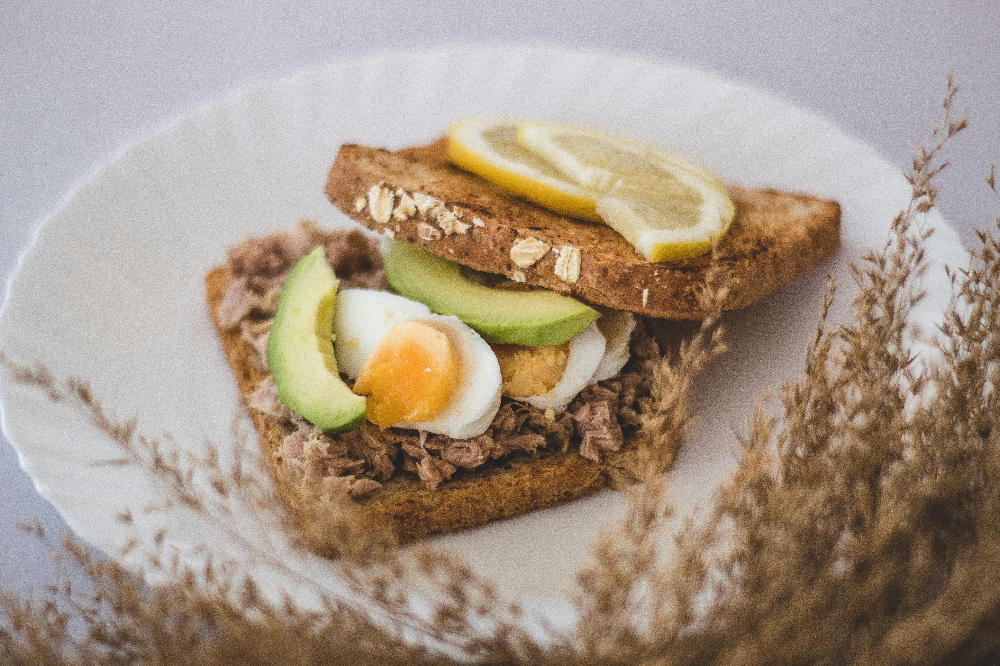

Welcome to Nutrition Details
Your guide to a healthy and balanced diet

Healthy Eating
Discover the benefits of a nutritious diet
Fitness and Nutrition
Achieve your fitness goals with proper nutrition
Your guide to a healthy and balanced diet
Discover the benefits of a nutritious diet
Achieve your fitness goals with proper nutrition
Nutrition plays a crucial role in maintaining overall health and well-being. A balanced diet provides essential nutrients that are vital for various bodily functions, including growth, repair, and energy production.
Key aspects of nutrition include:
Understanding nutritional needs and making informed food choices can help prevent chronic diseases, support optimal physical and mental performance, and enhance overall quality of life.
Understanding daily nutritional requirements is essential for maintaining optimal health and well-being. A balanced diet provides the necessary nutrients for bodily functions, growth, and energy production.
Key components of daily nutritional requirements include:
Consulting with a registered dietitian or nutritionist can help tailor daily nutritional requirements to individual needs and goals.
Obtaining essential nutrients from a variety of food sources ensures a balanced diet. Different foods provide different nutrients, so it's important to consume a diverse range of foods.
Key sources of essential nutrients include:
Incorporating these food sources into daily meals can help meet nutritional needs and support overall health.
Discover a variety of healthy recipes that are not only delicious but also packed with essential nutrients. Whether you're looking for breakfast, lunch, dinner, or snacks, there's something for everyone.
Explore more recipes online and experiment with different ingredients to find what works best for your taste and nutritional needs.